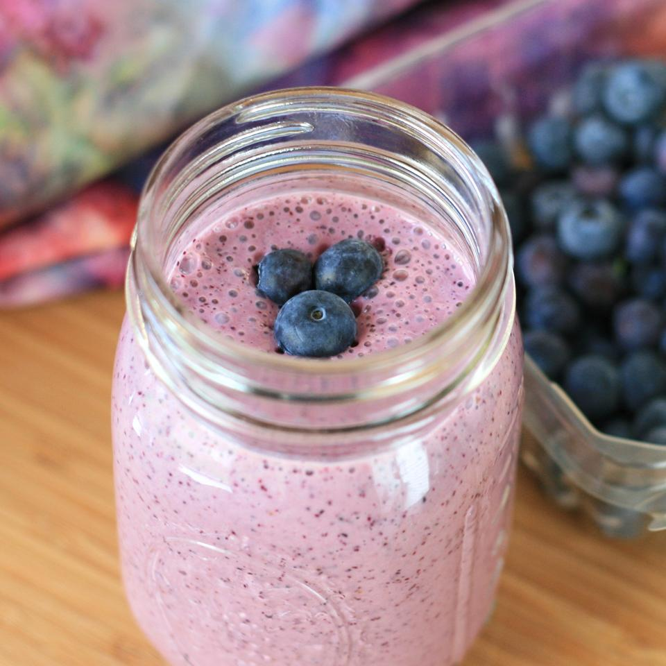

Healthy Blueberry Breakfast Smoothie
As seen on allrecipes

Description
A quick recipe I thought up while trying to decide what to eat for breakfast.
Great if you are trying to figure out what to do with those blueberries in the
fridge or freezer! Also great on-the-go! Delicious and includes many foods that are
a great way to start your day!
- Total: 15 mins
- Prep: 15 mins
- Servings: 1
- Yield: 1 smoothie
Ingredients
- 1 cup fresh blueberries
- ½ cup Greek yogurt
- ¼ cup orange juice
- 1 tablespoon white sugar, or to taste
- ¼ teaspoon vanilla extract
- 1 pinch ground cinnamon, or to taste
- 3 ice cubes
Steps
- Blend blueberries, yogurt, orange juice, sugar, vanilla extract, and cinnamon
together in a blender on low speed for 30 seconds; increase speed to high and
blend until smooth, about 2 minutes. Add ice and blend on high until smooth,
about 1 minute more.